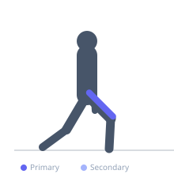
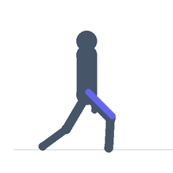

Exercise guide / Standing Quadriceps Stretch
Standing Quadriceps Stretch
The standing quadriceps stretch targets the rectus femoris and other quadriceps muscles through knee flexion while standing on one leg. Because the rectus femoris crosses both the hip and knee, the stretch is enhanced by simultaneously extending the hip of the stretching leg, which is achieved by drawing the foot toward the glute while maintaining an upright posture.
Primary muscles
rectus femoris
vastus lateralis
Secondary muscles
psoas major
Stabilizers
gluteus medius
Equipment
No Equipment (Bodyweight)


Starting position
- Stand on one foot. Bend the other knee and grasp the ankle of the bent leg with the hand on the same side. Stand upright.
Setup
- If balance is a challenge, hold onto a wall or sturdy surface with the free hand.
Steps
- Step 1: Stand on one leg with knees together.
- Step 2: Grasp the ankle of the opposite leg and draw the heel toward the glute.
- Step 3: Squeeze the glute of the stretching leg to extend the hip slightly, increasing the stretch on the rectus femoris.
- Step 4: Keep both knees together and the torso upright — do not let the hip of the raised leg flare outward.
- Step 5: Hold 30–60 seconds, then switch legs.
Coaching cues
- Squeeze the glute of the leg you are stretching to increase the stretch
- Stand tall — imagine a string pulling you up through the top of your head
- Keep the knees touching or close together
Breathing
- Breathe slowly and deeply throughout the hold.
Range of motion
- Bring the heel toward the glute as far as comfortable without discomfort in the knee.
Tempo
- Hold 30–60 seconds per side. 2–3 rounds.
Common mistakes
- Letting the knee of the stretching leg flare sideways — keep knees aligned
- Leaning forward at the hip, which reduces the stretch on the rectus femoris
- Pulling the heel into the glute with excessive force, stressing the knee joint
Safety
- Those with knee pain should ensure the stretch is felt in the thigh, not the knee
- Do not wrench the ankle — a gentle hold is sufficient
Training
- mobility: 2–3 reps
- mobility: 1–2 sets
- Rest: {'mobility': 10}